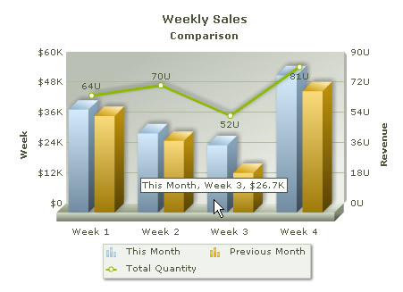

| Creating Combination Chart | ||||||||||||||||||||||||
Combination chart has two y-axes. The y-axis on the left hand side is called Primary y-axis and that on the right hand side is called Secondary y-axis. Combination charts are used when we intend to compare two different types of data on the same chart, for example, if we want to plot Weekly Sales Revenue of two consecutive months and total units sold on the same chart, we have to use a Combination Chart. See the image below and note that the two y-axes are representing different data units. |
||||||||||||||||||||||||
|  | ||||||||||||||||||||||||
Let's add some more data to the existing Table for multi-series chart. We will add a column that tabulates Total Quantity Sales. |
||||||||||||||||||||||||
|
||||||||||||||||||||||||
| Before you go further with this page, we recommend you to please see the previous pages, Creating First Chart and Creating Multi-series chart, as we start off from concepts explained in that page. | ||||||||||||||||||||||||
Here is the code that builds up this Combination chart: |
||||||||||||||||||||||||
<?php
# Include FusionCharts PHP Class
include('../Class/FusionCharts_Gen.php');
# Create Column 3D + Line Dual Y-Axis Combination Chart
$FC = new FusionCharts("MSColumn3DLineDY","350","300");
# Set the relative path of the SWF file
$FC->setSWFPath("../FusionCharts/");
# Store chart attributes in a variable
$strParam="caption=Weekly Sales;subcaption=Comparison;xAxisName=Week;
pYAxisName=Revenue;sYAxisName=Total Quantity;numberPrefix=$;sNumberSuffix= U";
# Set chart attributes
$FC->setChartParams($strParam);
# Add category names
$FC->addCategory("Week 1");
$FC->addCategory("Week 2");
$FC->addCategory("Week 3");
$FC->addCategory("Week 4");
# Add a new dataset with dataset parameters
$FC->addDataset("This Month","showValues=0");
# Add chart data for the above dataset
$FC->addChartData("40800");
$FC->addChartData("31400");
$FC->addChartData("26700");
$FC->addChartData("54400");
# Add another dataset with dataset parameters
$FC->addDataset("Previous Month","showValues=0");
# Add chart data for the second dataset
$FC->addChartData("38300");
$FC->addChartData("28400");
$FC->addChartData("15700");
$FC->addChartData("48100");
# Add third dataset for the secondary axis
$FC->addDataset("Total Quantity","parentYAxis=S");
# Add data values for the secondary axis
$FC->addChartData("64");
$FC->addChartData("70");
$FC->addChartData("52");
$FC->addChartData("81");
?>
<html>
<head>
<title>First Chart Using FusionCharts PHP Class</title>
<script language='javascript' src='../FusionCharts/FusionCharts.js'></script>
</head>
<body>
<?php
# Render Chart
$FC->renderChart();
?>
</body>
</html> |
||||||||||||||||||||||||
As you find in the above code, creating Combination charts is similar to creating multi-series charts. Here too, there are multiple datasets. Some datasets are specified for primary y-axis and some conform to the Secondary y-axis. We need to specify which dataset belongs to which y-axis. Let's see how we did that in the following steps:
|
||||||||||||||||||||||||
| Please go through the FusionCharts PHP Class API Reference section to know more about the functions used in the above code. | ||||||||||||||||||||||||
This code renders the Combination Chart that we needed. |
||||||||||||||||||||||||